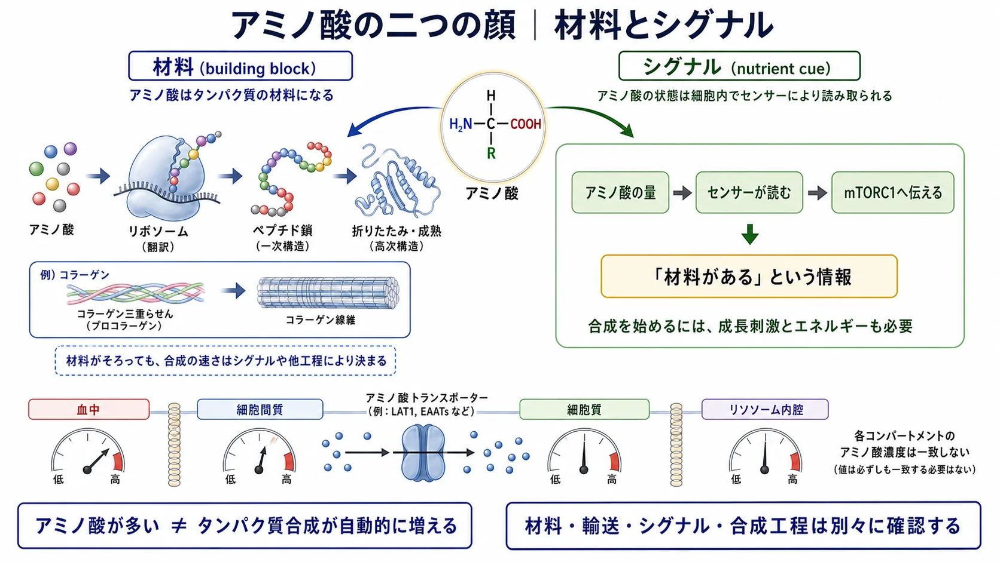

基礎 ／ 材料を感知し作る
アミノ酸は材料であり、シグナルでもある
公開 2026-08-28 ／ 最終更新 2026-09-13
タンパク質を作るには、配列が求めるアミノ酸とATP（→ 代謝とATP）が必要です。この章では、アミノ酸が実際の材料になる仕組み、その量が細胞内のセンサーに読まれる仕組み、そして一部のペプチドが受容体へ信号を伝える仕組みを見ます。
この章の前提：鎖ができてから機能するまでの工程（→ DNAからタンパク質まで）／受容体とその下流（→ 受容体と細胞内シグナル）
この章の一言
材料がそろっていることと、合成が始まることは別です。アミノ酸は材料であると同時に、その濃度がセンサーに感知されて合成の開始を左右する分子でもあります。

1 同じ20種類から、並び方が立体構造を作る
アミノ酸は単量体です。これが比較的短くつながった鎖をペプチド、より長い鎖をタンパク質と呼びます。主な違いは鎖の長さです。ただし、「アミノ酸何個からタンパク質」とする世界共通の厳密な境界はありません。タンパク質の多くは、長い鎖が折りたたまれて機能する立体構造を作ります。
酵素も、受容体も、collagenも、ペプチドホルモンも、20種類の標準アミノ酸の組み合わせでできています。アミノ酸の種類が同じでも、数と並び方が変わると、性質の異なるペプチドやタンパク質になります。
配列はcodonで指定される
並び方を決めているのは、遺伝子の塩基配列です。DNAの配列がmRNAに写し取られ、mRNAは塩基3つを1組として読まれます。この3塩基の組がcodonです。codonが指定するアミノ酸をtRNAが運び、ribosomeがつなぎます（→ DNAからタンパク質まで）。
mRNAの塩基は adenine（A）・uracil（U）・guanine（G）・cytosine（C）の4種類なので、3つ組は4×4×4＝64通りです。64種類のアミノ酸があるわけではありません。61個のcodonが20種類の標準アミノ酸を指定し、残る3個は合成を終えるstop codonです。複数のcodonが同じアミノ酸を指定します。DNAではUのかわりにthymine（T）を使います。
エピゲノムが調節するのは配列そのものではなく、その遺伝子をどれだけ読むかです（→ エピゲノム）。配列が指定するアミノ酸が不足すると、tRNAへ十分に載せられず、そのcodonで鎖の伸長が滞ります。
配列から、立体構造と機能が決まる
アミノ酸の並び方が立体構造を決め、立体構造が機能を決めます。 酵素の活性部位も受容体のリガンド結合部位も、配列の上では離れたアミノ酸が、折りたたみによって立体的に寄って作られたものです。熱や pH の変化で立体が崩れれば（変性）、組成も配列もそのままなのに、リガンドは受容体に結合できなくなり、酵素は基質を捕まえられなくなります。
短いペプチドは、タンパク質のような大きく安定した立体構造を持たないものが多い一方、単独で、あるいは受容体に結合するときに一定の形を取るものもあります。信号として働くペプチドでは、受容体の結合部位に合う形を取れることが重要です（→ §4）。
2 必須と非必須を分けているのは、入手方法
20種類のうち、ヒトが体内で十分に合成できず食事から摂る必要があるものが必須アミノ酸（essential amino acid、9種）、体内で他の材料から作れるものが非必須アミノ酸（non-essential amino acid、11種）です。
- 「非必須」は体内で作れるという意味で、重要度の話ではありません。タンパク質合成にはどちらも要ります。
- ふだんは作れるのに、成長期・侵襲・創傷治癒など需要が跳ね上がる場面で供給が追いつかなくなるものを、条件付き必須（conditionally essential）と呼びます（glutamine, arginine, glycine など）。つまり、非必須アミノ酸の一部が状況によって条件付き必須になります。
- この分類は入手方法の違いであって、合成を促す力の強さの順位ではありません。
アミノ酸を燃料として使う側——窒素を外し、炭素骨格を代謝へ入れる話——はTCA回路にあります。
必須・非必須とは別の分け方：BCAA
アミノ酸には、必須・非必須のほかに、側鎖の構造や代謝上の性質に注目した分け方もあります。BCAAはその一つです。
BCAA（branched-chain amino acids、分岐鎖アミノ酸）は、側鎖が枝分かれしたleucine・isoleucine・valineの3種類です。いずれも必須アミノ酸です。
標準アミノ酸20種の代表的な役割
すべての標準アミノ酸はタンパク質の材料です。さらに、それぞれが別の分子の材料や代謝のシグナルとしても働きます。下の表は代表例であり、一つのアミノ酸の役割を一つに限定するものではありません。
必須アミノ酸：9種類
| アミノ酸 | 分類 | 代表的な役割 |
|---|---|---|
| histidine（His） | 必須 | histamineの材料。タンパク質内では酸と塩基の受け渡しにも関わる |
| isoleucine（Ile） | 必須・BCAA | タンパク質の材料となり、分解されるとエネルギー代謝にも入る |
| leucine（Leu） | 必須・BCAA | タンパク質の材料であり、mTORC1を介して合成開始を促すタンパク質合成シグナル |
| lysine（Lys） | 必須 | collagen・elastinの架橋形成、carnitineの材料に関わる |
| methionine（Met） | 必須 | タンパク質合成の開始に使われ、SAM（S-アデノシルメチオニン）を介してメチル基を渡す |
| phenylalanine（Phe） | 必須 | tyrosineの材料となり、catecholamineやmelaninの合成へつながる |
| threonine（Thr） | 必須 | タンパク質の材料。mucinなどの糖タンパク質にも多く使われる |
| tryptophan（Trp） | 必須 | serotonin・melatonin・kynurenine経路を介したNAD⁺の材料 |
| valine（Val） | 必須・BCAA | タンパク質の材料となり、分解されるとエネルギー代謝にも入る |
通常は体内で作れるアミノ酸
| アミノ酸 | 分類 | 代表的な役割 |
|---|---|---|
| alanine（Ala） | 非必須 | pyruvateと相互変換され、筋と肝の間で炭素と窒素を運ぶ |
| asparagine（Asn） | 非必須 | タンパク質の材料。タンパク質のN結合型糖鎖が付く位置にもなる |
| aspartate（Asp） | 非必須 | 核酸合成と尿素回路の材料になる |
| glutamate（Glu） | 非必須 | アミノ基を集める中心となり、glutathione（GSH）や神経伝達物質の材料にもなる |
| serine（Ser） | 非必須 | glycine・一炭素代謝・phospholipidの材料になる |
状況によって条件付き必須となるアミノ酸
非必須アミノ酸のうち、成長・侵襲・代謝の状態によって供給が不足しやすいものです。すべてが同じ状況で不足するわけではありません。
| アミノ酸 | 分類 | 代表的な役割 |
|---|---|---|
| arginine（Arg） | 非必須・条件付き必須 | 一酸化窒素（NO）・urea・creatineの材料となり、mTORC1にも感知される |
| cysteine（Cys） | 非必須・条件付き必須 | タンパク質内でdisulfide bond（ジスルフィド結合）を作り、GSHの材料にもなる |
| glutamine（Gln） | 非必須・条件付き必須 | 窒素と炭素を運び、核酸合成や増殖する細胞の代謝を支える |
| glycine（Gly） | 非必須・条件付き必須 | collagenの約3分の1を占め、GSH・heme・核酸の材料にもなる |
| proline（Pro） | 非必須・条件付き必須 | collagenに多く含まれ、一部がhydroxyprolineとなって三重らせんを安定させる |
| tyrosine（Tyr） | 非必須・条件付き必須 | catecholamine・甲状腺ホルモン・melaninの材料になる |
3 アミノ酸は、細胞の状態と代謝を左右する
アミノ酸はタンパク質の材料になるだけではありません。その量が細胞のセンサーに読まれるもの、別の機能分子の材料になるもの、ほかのアミノ酸の取り込みを左右するものがあります。
濃度がセンサーに読まれる
- leucineはSestrin2に、arginineはCASTOR1に結合します。どちらも材料が足りているかを判定するセンサーで、出力はmTORC1に集まります（→ mTORC1――タンパク質合成を調節する仕組み）。材料が足りていることは、合成を始めるための条件の一つです。
- methionineはSAM（S-アデノシルメチオニン）に変わります。SAMの量はSAMTORに読まれます。また、SAMはDNAやヒストンのメチル化に使うメチル基を渡します（→ エピゲノム）。
センサーがどこで何を感知し、それがどう合成の開始につながるかはmTORC1――タンパク質合成を調節する仕組みで扱います。
別の機能分子の材料にもなる
- arginineは、NOS（nitric oxide synthase）がNOを作るときの材料です。
- tryptophanはキヌレニン経路を通り、NAD⁺のde novo合成の材料になります（→ NAD⁺）。
- glycine・glutamate・cysteineの3つから、主要な細胞内抗酸化分子の一つであるglutathione（GSH）が作られます（→ 酸化ストレスと抗酸化）。
取り込みは、ほかのアミノ酸にも左右される
LAT1（SLC7A5）は交換輸送体です。細胞内のglutamineを外へ出す代わりにleucineを取り込みます。つまり、あるアミノ酸の量が、別のアミノ酸の取り込みを左右します（→ 細胞膜と物質輸送）。
この「材料とシグナル」の視点は、肌育製剤にもつながります。 一部の肌育製剤には、collagenの材料となるglycine・proline・lysineや、mTORC1が感知するleucine・arginineなどが配合されています。ただし、配合されている理由と、注入後に新しいcollagenが増えることは同じではありません。製剤ごとのアミノ酸の違いと、注入後に通る段階は肌育治療を細胞生物学で読むで扱います。
4 シグナルとして働くペプチド
ペプチドの中には、受容体に結合して細胞へ情報を伝えるものがあります。EGF・PDGF・TGF-βもアミノ酸の鎖からなるシグナル分子ですが、通常は成長因子タンパク質と呼びます。
| ペプチド | 何をするか | 押さえどころ |
|---|---|---|
| インスリン（アミノ酸51個） | 受容体に結合して、糖の取り込みと同化を進める | ペプチドホルモンの代表 |
| GLP-1（活性型はアミノ酸30個または31個） | 腸から出て、インスリン分泌を促し、胃排出を遅らせ、満腹感を高める | これを模したGLP-1受容体作動薬は多くが注射薬だが、経口薬もある |
| α-MSH（アミノ酸13個） | MC1Rに結合し、eumelanin産生方向へ促す（→ メラノサイトと色素形成） | POMCから切り出される。UVを浴びたケラチノサイトが出し、メラノサイトのMC1Rに届く（→ メラノサイトと色素形成） |
| matrikine | ECMの分解で生じたcollagen・elastinなどの断片が、細胞へシグナルを伝える（→ 細胞外基質（ECM）） | 配列と状況により、修復・炎症・血管新生・線維化など異なる反応を起こす |
| acetyl hexapeptide-8 | SNAP-25のN末端を模し、SNARE複合体の形成を抑えることを狙って設計された合成ペプチド | 化粧品で「塗るボトックス」と称されるのはこれ。botulinum toxinと同じ作用が確立したわけではない |
matrikineは一つの物質名ではなく、ECM由来のシグナル断片の総称です。作用の方向は配列と状況によって変わります。化粧品には、天然の断片をそのまま入れるのではなく、その配列をまねて安定化した合成ペプチドが使われます。代表例のpalmitoyl pentapeptide-4（pal-KTTKS）は、collagen由来配列を模したmatrikine型ペプチドです（PMID 24815015、PMID 35378216）。
インスリン、GLP-1、α-MSHは、細胞膜の受容体に結合して、細胞内へ指令を伝えます。一方、acetyl hexapeptide-8のように、受容体ではなく細胞内のタンパク質を標的として設計されたペプチドもあります。受容体から先の仕組みは受容体と細胞内シグナルで説明します。
この章の到達点
- ペプチドもタンパク質も、20種類の中から選ばれたアミノ酸が並んだ鎖です。並び方はcodon（塩基3つ）が指定し、その並び方が立体構造と機能を決めます。
- 必須9種・非必須11種は入手方法の分類であって、合成を促す力の分類ではない。需要が跳ね上がる場面では条件付き必須になるものがある。
- 一部のアミノ酸の濃度は細胞のセンサーに読まれます。また、アミノ酸はNO・NAD⁺・GSHなどの材料にもなります。
- ペプチドの一部は、受容体に結合して細胞へ情報を伝えます。受容体ではなく、細胞内のタンパク質を標的に設計された合成ペプチドもあります。
mTORC1――タンパク質合成を調節する仕組みでは、アミノ酸の充足がどのように合成開始へ伝わるかを見ます。mTORC1は、アミノ酸の充足だけでなく、成長刺激とエネルギー状態もそろったときに合成側へ進みます。
この章の更新
- 構成を維持して説明の順序・見出し・図の説明を整理
- 初公開